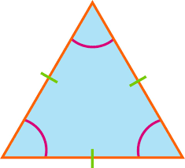

Welcome to Triangle Tracker! You will be required to have three measurements of the shape in numeric value to get a correct response.
Click the button below to begin tracking!
Equilateral Triangles
An equilateral triangle is a triangle whose three sides all have exactly the same length.
Isosceles Triangles
An isosceles triangle is a triangle that has (at least) two equal side lengths.

Scalene Triangles
A scalene triangle is a triangle tha meets minimum triangle's criteria that is; No side can be equal or greater than the sum of the other two sides in which case, the shape is not a triangle.